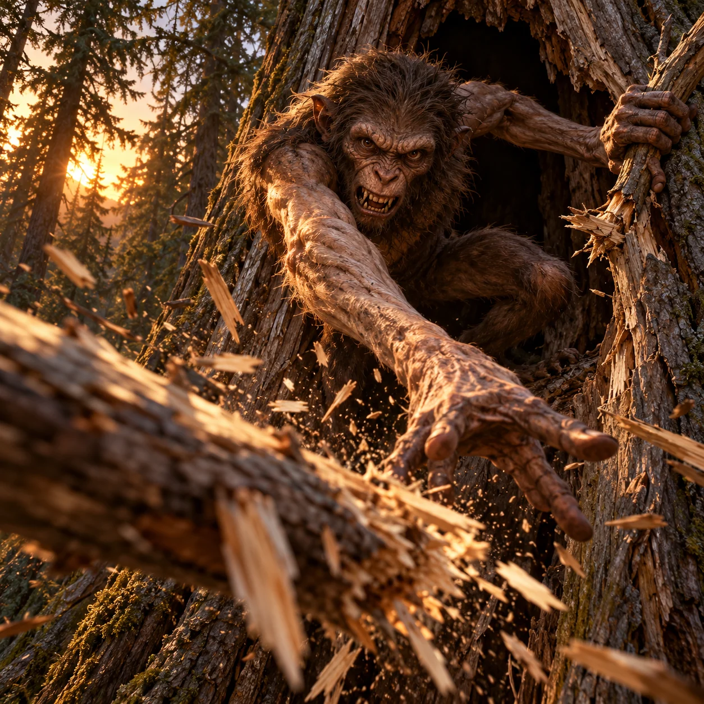

Agropelter

Slender ape-faced lumberwoods critter with muscular whiplash arms, hurling a dead branch.
Aura: Extraordinary whiplash arms and physical branch attack c02/c06 create threat, no invented magic.
Audit ciri dan sumber
- [object Object]
- [object Object]
- [object Object]
Native and 200px inspected: slender wiry ape-faced critter has exactly two extremely long muscular arms, two crouched legs, one head/two eyes. One hand releases heavy dead branch toward viewer and other snaps wood; c02/c06 action, hollow conifer tree c01. Long arms/action distinguish from ordinary ape. Foreground fingers perspective-consistent; no extra limbs, text, glow or gore. All seven Sangar checks pass.
Review sumberONE original square premium painterly cinematic Mitoloka illustration of Agropelter, the branch-hurling fearsome critter of American lumberwoods. ANATOMY: ONE slender wiry animal body, ONE sinister ape-like face with two eyes and ordinary ape teeth, TWO astonishingly long thin flexible muscular WHIPLASH arms, two legs crouched against hollow-tree wood; each arm ends in one five-finger ape-like hand, no tail, horns, wings, extra faces, giant fangs or added limbs. Sparse coarse dark brown fur on wiry torso, weathered nearly bare long muscular arms [argopelter-c06]. MOMENT: Twist out of a hollow tree straight toward the intruding viewer, hurl a jagged dead branch directly across the foreground with its right whiplash arm in a snapping follow-through, left long flexible arm pulls another dead branch from the tree. Show two arms separately and clearly; head close and menacing, not a normal chimp in a tree. POWER: physically snaps dead branches and throws wood splinters and branches at the unwary [argopelter-c02,argopelter-c06]. One freshly hurled heavy wooden branch blasts past camera with chips flying from its broken end; no supernatural glow, no cannons, no invented tornado. SCALE & CAMERA: extreme low close angle just outside the hollow tree; wiry creature, sinister face and long flexible arms fill 80 percent of frame. No giant body or tiny human comparison; terrifying proximity rather than invented size. LIGHT & WEATHER: one dominant dying sunset beam slices through conifer canopy, bronze rim light, deep walnut shadows, ordinary sawdust and wood chips scattering from branch break. SURFACE: matted coarse brown fur, sinewy leathery arms, splintered dry branches, coarse damp conifer bark. SETTING: large hollow conifer tree in the Maine-to-Oregon lumberwoods, dark surrounding conifer forest at edges [argopelter-c01,argopelter-c04]. MOOD: vengeful, dangerous and predatory; an aggressive supernatural critter hurling wood toward us, never cute, calm or decorative. HARD CONSTRAINTS: no text, pseudoinscriptions, lettering, logo, border, frame or watermark; no extra heads, limbs or fingers; no borrowed film, game, anime or comic design; no nudity or explicit gore; no generic glowing aura, neon outline, energy ribbons or floating runes. Premium painterly brushwork, dark warm palette, square composition.